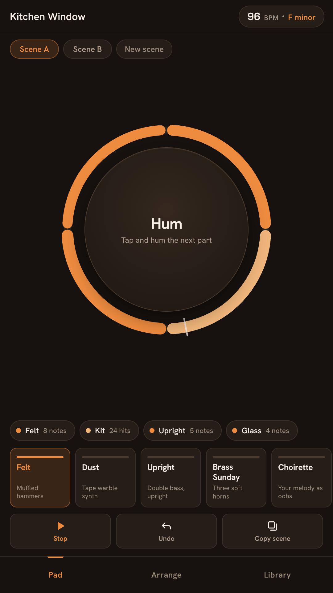
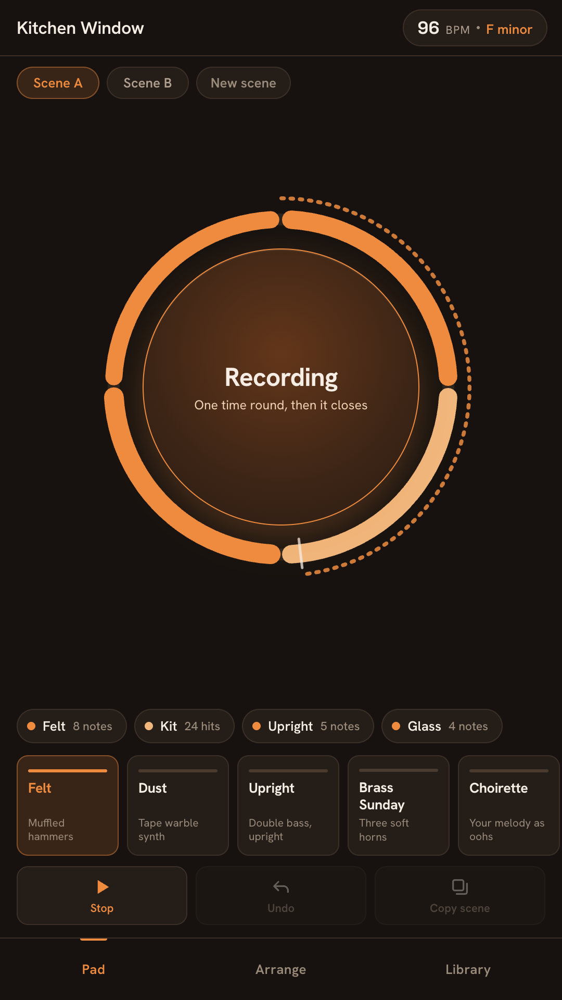
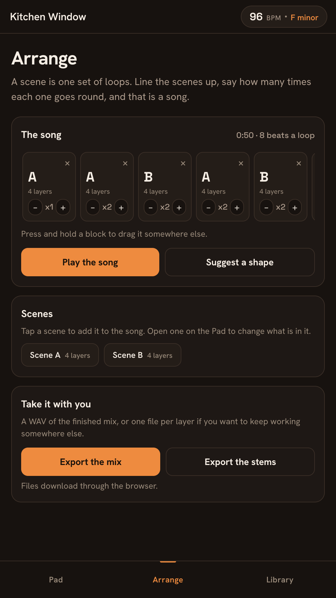
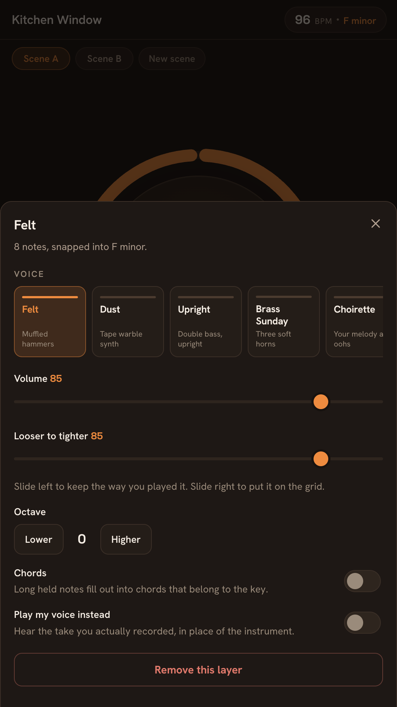
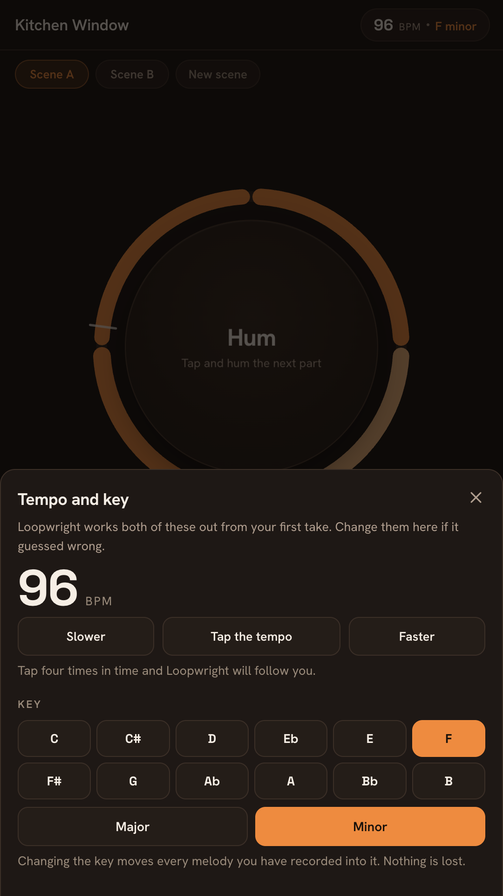
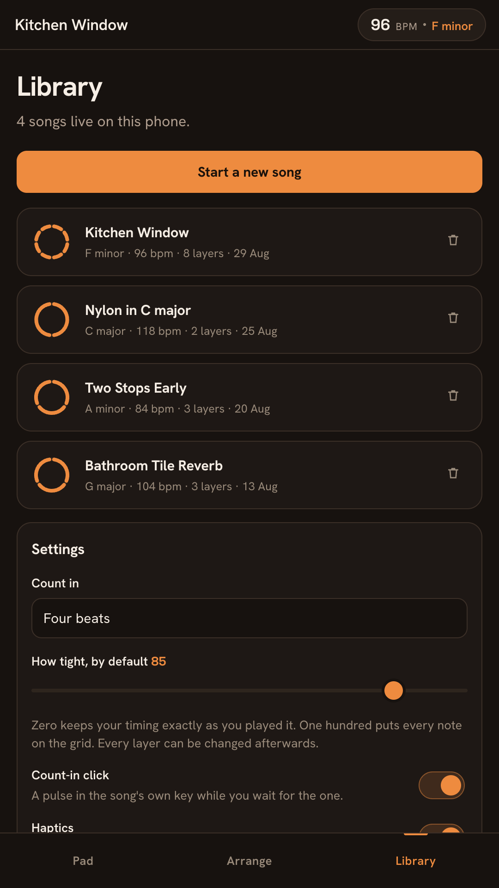

Hum a melody and it comes back as a felt piano. Say boots and cats and it comes back as drums. Stack the loops, drop them in and out while it plays, and you have written something.
Play it in your browserFree. No account, no adverts, no subscription. Works with the radio off.

Nobody hums accurately. The pipeline is built around that fact instead of against it: it works out the key you are implying, moves your wobbly notes into it, and pulls your timing towards the grid without flattening it.
What you did
You hummed eight notes into a phone on a bus, slightly flat, slightly early.
The original take is kept. One toggle plays it back so you can hear what you actually sang.
What came back
Eight notes of felt piano in F minor, in time, still swinging the way you swung.
A slider runs from exactly as you played it to exactly on the grid. It starts most of the way towards you.
Pitch is tracked frame by frame, the key comes from tone profiles weighed by how long you held each note, and the tempo is the pulse your take argues with least. All of it in ordinary signal processing, on your phone, in about a fifth of a second.

The loop pedal, in a phone
The interface is one you have already watched somebody use. A busker steps on a pedal, plays a bar, steps again, and the bar starts repeating under them. That is the whole thing.
Tap and hum. Tap again to close the loop. It starts cycling immediately and the tempo of the song is now whatever you just did.
Overdub. Pick a voice, tap once more, and the next take lands exactly one loop long. Up to eight layers in a scene.
Perform it. Tap a layer to drop it out of the mix while it plays, tap it again to bring it back. Muting and un-muting is most of what makes looping feel like music.
Change your mind. Any layer can be re-voiced, moved an octave, loosened, tightened or deleted afterwards. Nothing is baked in.
Not five hundred presets behind a search box. Nine voices with names and opinions, every one of them built out of oscillators and filters at the moment it sounds, which is why the whole app is under half a megabyte of code and works in airplane mode.
A set of loops is a scene. Copy it, mute two layers, add one, and the copy is your chorus. Nobody had to say the word arrangement.
Line the scenes up in a strip, say how many times each one goes round, and that is a song. If you would rather not decide, one button proposes intro, verse, chorus, verse, chorus, out, and you can change any of it.
Export the finished mix as a WAV, or one WAV per layer if you want to keep working somewhere else. No watermark is added to your audio, ever. What you make is yours, including commercially.

The plain version
Two. The microphone, because the app listens to you, and vibration, for the count-in you can feel. Nothing else.
None at all. Loopwright does not request the internet permission, so Android will not let it open a connection. You can check that on the Play listing before you install.
There isn't one. Nothing to sign up for, nothing to sign in to, nothing to lose when a server goes away.
Free, and complete. No subscription, no in app purchase, no locked voices, no export cap, no adverts.
In this phone's private app storage, including the short recordings kept behind the compare toggle. Deleting a song deletes them. Two taps in Settings erase everything.
By exported file, through your own share sheet, to whoever you choose. There is no feed, no profile and no community inside the app.
Three surfaces and a handful of sheets. If it takes you more than ninety seconds to find everything, something has gone wrong.



You have been humming it for years. Give it four seconds.
Play it in your browserThe browser version is the same app. Headphones help: without them the microphone hears the loop as well as you.